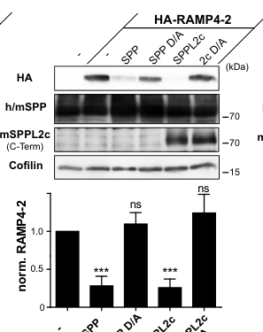

SERP2 (stress-associated endoplasmic reticulum protein 2, also RAMP4-2, ribosome-associated membrane protein RAMP4-2) is a small (65 aa) single-pass endoplasmic reticulum membrane protein of the RAMP4 family and a paralog of SERP1/RAMP4. Like SERP1, it associates with the Sec61 translocon and binds nascent membrane and secretory proteins during their translocation into the ER, protecting these still-unfolded substrates from degradation during ER stress and facilitating their N-glycosylation after stress resolves, including modulating which N-glycosylation sites are used. Through these activities SERP2 contributes to the endoplasmic reticulum unfolded protein response and to membrane-protein biogenesis at the translocon. It physically associates with components of the Sec61 complex (SEC61A1, SEC61B) and calnexin. Its function is established largely by orthology and paralogy, and it is less experimentally characterized than SERP1.
| GO Term | Evidence | Action | Reason |
|---|---|---|---|
|
GO:0005783
endoplasmic reticulum
|
IBA
GO_REF:0000033 |
ACCEPT |
Summary: SERP2 acts at the ER (translocon) where, like its SERP1 paralog, it stabilizes nascent membrane proteins; the phylogenetic active-site assignment is correct.
Reason: Core site of action; SERP2 is a translocon-associated ER membrane protein.
Supporting Evidence:
file:human/SERP2/SERP2-uniprot.txt
Interacts with target proteins during their translocation into the lumen of the endoplasmic reticulum
|
|
GO:0030968
endoplasmic reticulum unfolded protein response
|
IBA
GO_REF:0000033 |
ACCEPT |
Summary: SERP2 is a stress-associated ER protein that acts during ER stress to protect nascent membrane proteins, placing it in the ER unfolded protein response.
Reason: Core biological process; SERP2 functions during ER stress to protect translocating substrates.
Supporting Evidence:
file:human/SERP2/SERP2-uniprot.txt
Protects unfolded target proteins against degradation during ER stress
|
|
GO:0005783
endoplasmic reticulum
|
IEA
GO_REF:0000002 |
ACCEPT |
Summary: InterPro-based ER localization, consistent with orthology and phylogenetic evidence.
Reason: Correct core localization.
Supporting Evidence:
file:human/SERP2/SERP2-uniprot.txt
Interacts with SEC61B, SEC61A1 and the SEC61 complex
|
|
GO:0005789
endoplasmic reticulum membrane
|
IEA
GO_REF:0000044 |
ACCEPT |
Summary: SERP2 is a single-pass ER membrane protein; the subcellular-location-based annotation is correct.
Reason: Core localization, consistent with the single-pass ER membrane topology.
Supporting Evidence:
file:human/SERP2/SERP2-uniprot.txt
Membrane {ECO:0000250|UniProtKB:Q9R2C1}; Single-
|
|
GO:0016020
membrane
|
IEA
GO_REF:0000044 |
KEEP AS NON CORE |
Summary: Generic membrane localization, a parent of the more informative ER membrane term.
Reason: Correct but uninformative; the specific GO:0005789 (ER membrane) better captures SERP2 localization.
Supporting Evidence:
file:human/SERP2/SERP2-uniprot.txt
Membrane {ECO:0000250|UniProtKB:Q9R2C1}; Single-
|
|
GO:0005515
protein binding
|
IPI
PMID:25416956 A proteome-scale map of the human interactome network. |
KEEP AS NON CORE |
Summary: Proteome-scale interactome capture of a SERP2 interaction; a real interaction but the bare protein binding term is uninformative.
Reason: High-throughput interactome capture; bare protein binding is uninformative per curation guidelines.
Supporting Evidence:
file:human/SERP2/SERP2-uniprot.txt
Q8N6R1; Q8N6L0
|
|
GO:0005515
protein binding
|
IPI
PMID:32296183 A reference map of the human binary protein interactome. |
KEEP AS NON CORE |
Summary: HuRI binary-interactome screen capturing SERP2 binding to a large set of membrane and secretory proteins; consistent with a translocon-substrate-stabilizing role but the bare protein binding term is uninformative.
Reason: Many partners are membrane-protein substrates consistent with SERP2's function, but bare protein binding is uninformative per guidelines.
Supporting Evidence:
file:human/SERP2/SERP2-uniprot.txt
Q8N6R1; Q13520: AQP6
|
|
GO:0005789
endoplasmic reticulum membrane
|
ISS
GO_REF:0000024 |
ACCEPT |
Summary: Sequence-similarity transfer of ER membrane localization from the mouse ortholog; consistent with the RAMP4-family identity.
Reason: Correct core localization, redundant with IEA evidence.
Supporting Evidence:
file:human/SERP2/SERP2-uniprot.txt
Membrane {ECO:0000250|UniProtKB:Q9R2C1}; Single-
|
|
GO:0016020
membrane
|
ISS
GO_REF:0000024 |
KEEP AS NON CORE |
Summary: Sequence-similarity transfer of generic membrane localization; a parent of ER membrane.
Reason: Correct but uninformative; the specific GO:0005789 (ER membrane) better captures SERP2 localization.
Supporting Evidence:
file:human/SERP2/SERP2-uniprot.txt
Membrane {ECO:0000250|UniProtKB:Q9R2C1}; Single-
|
Q: Is SERP2/RAMP4-2 functionally redundant with SERP1/RAMP4, or does it have distinct substrate preferences, tissue expression, or stress-response behavior?
Q: Which nascent membrane-protein substrates depend on SERP2 for stabilization or correct N-glycosylation during ER stress?
Experiment: Generate SERP2 single and SERP1/SERP2 double knockouts and assess membrane-protein stability, surface expression, and glycosylation under ER stress to test redundancy with SERP1.
Experiment: Proximity proteomics of SERP2 at the Sec61 translocon under basal and ER-stress conditions to define its substrate interactome and compare it with SERP1's.
The research report should be a detailed narrative explaining the function, biological processes, and localization of the gene product. Citations should be given for all claims.
You should prioritize authoritative reviews and primary scientific literature when conducting research. You can supplement
this with annotations you find in gene/protein databases, but these can be outdated or inaccurate.
We are specifically interested in the primary function of the gene - for enzymes, what reaction is catalyzed, and what is the substrate specificity? For transporters, what is the substrate? For structural proteins or adapters, what is the broader structural role? For signaling molecules, what is the role in the pathway.
We are interested in where in or outside the cell the gene product carries out its function.
We are also interested in the signaling or biochemical pathways in which the gene functions. We are less interested in broad pleiotropic effects, except where these elucidate the precise role.
Include evidence where possible. We are interested in both experimental evidence as well as inference from structure, evolution, or bioinformatic analysis. Precise studies should be prioritized over high-throughput, where available.
Human SERP2 (UniProt Q8N6R1) is annotated (per the user-provided UniProt identity) as a RAMP4-family small ER-associated membrane protein (“Stress-associated endoplasmic reticulum protein 2”; alternative name “Ribosome-associated membrane protein RAMP4-2”). In the accessible literature retrieved here, direct, SERP2/Q8N6R1-labeled mechanistic studies are limited; most mechanistic evidence concerns the closely named protein RAMP4-2 without explicit gene/UniProt mapping in-text, and broader RAMP4/SERP1 family context from translocon biology. The best-supported functional picture is that the RAMP4 family are ER membrane proteins enriched at ribosome–translocon complexes, and that RAMP4-2 behaves as a tail-anchored ER substrate for intramembrane proteases (SPP/SPPL2c), implying a role in ER proteostasis and membrane-protein biogenesis (niemeyer2019theintramembraneprotease pages 3-4, niemeyer2019theintramembraneprotease pages 5-6, vismpas2024rampingupknowledge pages 2-3, gemmer2020aclearerpicture pages 2-3, niemeyer2019theintramembraneprotease media d5029e8f).
A 2023 human genetics study explicitly names SERP2 as “Stress-Associated Endoplasmic Reticulum Protein 2” and reports female-specific association of an intergenic SNP near SERP2 with asthma; however, this evidence does not establish molecular mechanism (odimba2023identificationofsexspecific pages 10-11).
Secretory and membrane proteins are inserted into or translocated across the ER membrane primarily via the Sec61 translocon, often while the ribosome is actively translating (co-translational insertion). Accessory proteins (e.g., TRAP, TRAM1, and ribosome-associated membrane proteins) can modulate signal peptide handling, lateral-gate opening, and client specificity. Recent structural work emphasizes that the translocon is a dynamic assembly, with accessory factors associating transiently depending on the substrate (vismpas2024rampingupknowledge pages 2-3, gemmer2020aclearerpicture pages 2-3).
RAMP proteins were originally identified biochemically as ribosome-associated components of rough ER membrane fractions. A review of ER translocon composition notes that RAMP4 was among RAMPs isolated from pancreatic microsomes; recovery depended on detergent/salt conditions, and RAMP4 was one of the most detergent- and salt-resistant proteins isolated alongside translocon components, although early studies could not determine which proteins are stoichiometric translocon subunits (gemmer2020aclearerpicture pages 2-3).
Tail-anchored proteins are membrane proteins with a single hydrophobic helix near the C-terminus, inserted post-translationally into membranes. A key proteostasis mechanism for certain TA proteins is intramembrane proteolysis by aspartyl proteases such as SPP (signal peptide peptidase) and SPP-like proteases (SPPL family), which cleave within the transmembrane region and regulate stability/turnover of specific membrane proteins (niemeyer2019theintramembraneprotease pages 3-4, niemeyer2019theintramembraneprotease pages 5-6).
The symbol “SERP2” can be confused with unrelated “SERP-2” entities in other biological contexts (e.g., viral serpins in poxvirus literature). Within the retrieved human genetics literature, SERP2 is explicitly referred to as “Stress-Associated Endoplasmic Reticulum Protein 2” (odimba2023identificationofsexspecific pages 10-11). Mechanistic ER-translocon literature often refers to RAMP4 (and RAMP4-2) but, in the retrieved excerpts, does not explicitly map these names to SERP2/C13orf21/Q8N6R1; therefore, interpretations below separate (i) direct SERP2-locus human genetics evidence from (ii) RAMP4-family mechanistic inference, and note where evidence is family-level rather than SERP2-specific.
A 2024 eLife “Insight” discussing advanced cryo-EM of stalled ribosome–translocon complexes reports that RAMP4 localizes at the Sec61 lateral gate and relays a mechanistic proposal that RAMP4 can act as a “fourth subunit” of Sec61, helping keep the channel open and tether the complex to ribosomes during insertion of membrane proteins (vismpas2024rampingupknowledge pages 2-3). The same Insight indicates RAMP4 may be transiently displaced during insertion of transmembrane domains and may dissociate when other factors (PAT chaperone complex) are recruited, reinforcing a dynamic, substrate-dependent model (vismpas2024rampingupknowledge pages 2-3).
A 2020 review similarly places RAMP4 (renamed SERP1 in that context) among proteins isolated with ER translocon fractions and emphasizes how difficult integral membrane accessory proteins are to visualize in some cryo-ET approaches (gemmer2020aclearerpicture pages 2-3).
Interpretation for SERP2/Q8N6R1: because UniProt places SERP2 in the RAMP4 family, the most conservative inference is that SERP2 is likely an ER membrane protein participating in (or proximal to) ribosome–translocon complexes, but these specific structural statements are directly about RAMP4 (often equated to SERP1 in the literature) rather than explicitly about SERP2 (vismpas2024rampingupknowledge pages 2-3, gemmer2020aclearerpicture pages 2-3).
A primary mechanistic study of the intramembrane protease SPPL2c tested multiple TA proteins including RAMP4-2. The authors describe RAMP4 and RAMP4-2 as stress-associated ER-associated proteins and treat RAMP4-2 as a tail-anchored (TA) protein in their assays (niemeyer2019theintramembraneprotease pages 3-4, niemeyer2019theintramembraneprotease pages 5-6). In HEK293/HeLa overexpression experiments, the study reports:
These data provide the strongest functional clue relevant to the UniProt-described SERP2 protein if the RAMP4-2 substrate corresponds to SERP2/Q8N6R1: SERP2 would be expected to be ER-localized, tail-anchored, and potentially regulated by SPPL2c/SPP-mediated intramembrane proteolysis (niemeyer2019theintramembraneprotease pages 3-4, niemeyer2019theintramembraneprotease pages 5-6, niemeyer2019theintramembraneprotease media d5029e8f). However, in the retrieved excerpt, RAMP4-2 is not explicitly mapped to SERP2/C13orf21/Q8N6R1, so this remains an inference that must be verified via sequence/accession mapping in the full text or databases.
A 2023 mechanistic paper on regulation of SPPL2c uses HA-RAMP4-2 cleavage as a readout assay and explicitly refers to RAMP4-2 as “stress-associated endoplasmic reticulum protein family member 2 (RAMP4-2)” (contreras2023thetransmembranedomain pages 1-3, contreras2023thetransmembranedomain pages 4-7, contreras2023thetransmembranedomain pages 7-9). This supports the concept that RAMP4-2 is an ER stress-associated family member and that it is experimentally tractable as an intramembrane-protease substrate (contreras2023thetransmembranedomain pages 1-3).
Given the evidence available in this run, the best-supported pathway context for SERP2/Q8N6R1 is:
These two contexts are coherent: proteins that transiently associate with the translocon and integrate into ER membranes are often subject to quality control and regulated turnover, including intramembrane proteolysis.
The 2024 eLife Insight highlights that cryo-EM intermediates place RAMP4 at the Sec61 lateral gate and argue it may act as a functional subunit of Sec61 in certain translocon states, with possible dynamic association/dissociation during multi-pass insertion (vismpas2024rampingupknowledge pages 2-3). This represents a substantial conceptual development in how small accessory ER membrane proteins may regulate translocon conformational states.
The 2023 CMLS paper uses RAMP4-2 cleavage assays to mechanistically dissect regulation of SPPL2c (via Frey1 motifs), reinforcing RAMP4-2 as a key experimental substrate for this intramembrane protease system (contreras2023thetransmembranedomain pages 4-7, contreras2023thetransmembranedomain pages 7-9).
In a 2023 genome-wide SNP-by-sex interaction analysis (CLSA; n=23,323), the authors report that an intergenic SNP rs9525931 near SERP2 had a female-specific association with asthma after Bonferroni correction (odimba2023identificationofsexspecific pages 10-11). They further note that variants near SERP2 had been reported in prior GWAS for lung function measures (FEV1 and FEV1/FVC) and that SERP2-mapped CpGs/SNPs had been associated with Alzheimer’s disease in females (odimba2023identificationofsexspecific pages 10-11). This is “gene-level” support for clinical relevance but does not resolve molecular mechanism.
The table below distinguishes direct SERP2 evidence from RAMP4-family context and RAMP4-2 mechanistic data.
| Evidence type | What was shown | System/assay | Key quantitative findings (numbers) | Interpretation for SERP2 function/localization | Source (paper, year, URL) |
|---|---|---|---|---|---|
| Genetic association | Human SERP2 was explicitly named Stress-Associated Endoplasmic Reticulum Protein 2; an intergenic SNP near SERP2 showed a female-specific asthma association, and the paper also noted prior associations of SERP2-region variants with lung function/COPD and female Alzheimer’s disease signals. | SNP-by-sex interaction GWAS and sex-stratified analysis in 23,323 Canadian adults from CLSA | 23,323 individuals analyzed; 49 SNPs with interaction p < 10^-5 screened; 3 female-specific SNPs passed Bonferroni correction, including rs9525931 near SERP2 (odimba2023identificationofsexspecific pages 10-11) | Confirms the existence of human SERP2 as a distinct gene; current direct evidence is genetic/association-based rather than mechanistic, with the name implying ER association but not proving biochemical function. | Odimba et al., 2023, Journal of Asthma and Allergy, https://doi.org/10.2147/JAA.S404670 (odimba2023identificationofsexspecific pages 10-11) |
| Structural/translocon (family context) | In recent cryo-EM interpretation, RAMP4 localizes near the Sec61 lateral gate and was proposed to behave like a fourth Sec61 subunit, helping keep the channel open and tether the complex to ribosomes during membrane protein insertion. | Cryo-EM/structural interpretation of stalled ribosome–translocon intermediates, reviewed in eLife Insight | No explicit stoichiometric number beyond the proposal of a "fourth subunit"; structural intermediates captured open-gate states (vismpas2024rampingupknowledge pages 2-3) | Supports a plausible ER translocon-associated role for the UniProt-defined SERP2/RAMP4-family protein, but this evidence is for RAMP4 family context and does not explicitly map the studied RAMP4 species to SERP2/Q8N6R1. | Vismpas & Förster, 2024, eLife, https://doi.org/10.7554/eLife.98548 (vismpas2024rampingupknowledge pages 2-3) |
| Structural/translocon (family context) | Earlier translocon review summarized that RAMP4/SERP1 was originally isolated among ribosome-associated membrane proteins and was unusually resistant to detergent/salt extraction with Sec61-associated material, but its exact stoichiometry/position was unresolved in older preparations. | Review of biochemical isolation and cryo-ET literature on mammalian ER translocons | No direct SERP2-specific numbers; key point is detergent- and salt-resistant recovery with translocon fractions (gemmer2020aclearerpicture pages 2-3) | Reinforces the inference that RAMP4-family proteins are ER membrane/ribosome-translocon associated; however, this remains family-level context, not direct evidence for human SERP2 specifically. | Gemmer & Förster, 2020, Journal of Cell Science, https://doi.org/10.1242/jcs.231340 (gemmer2020aclearerpicture pages 2-3) |
| Intramembrane proteolysis | RAMP4-2 was experimentally tested as a tail-anchored (TA) protein and was the only one among tested TA candidates efficiently cleaved by SPPL2c; it also overlapped with SPPL2c in the ER. | HEK293/HeLa overexpression, Western blot cleavage assays, immunofluorescence colocalization | In the tested panel, RAMP4-2 was the only candidate efficiently cleaved by SPPL2c; near-complete depletion was reported under assay conditions (niemeyer2019theintramembraneprotease pages 3-4, niemeyer2019theintramembraneprotease pages 5-6) | Provides the strongest functional/localization clue linked to the UniProt identity: if RAMP4-2 corresponds to SERP2/Q8N6R1, then SERP2 is likely an ER-localized TA membrane protein and a potential SPPL2c/SPP substrate. The limitation is that the retrieved paper text did not explicitly map RAMP4-2 to SERP2/C13orf21/Q8N6R1. | Niemeyer et al., 2019, EMBO Reports, https://doi.org/10.15252/embr.201846449 (niemeyer2019theintramembraneprotease pages 3-4, niemeyer2019theintramembraneprotease pages 5-6) |
| Intramembrane proteolysis / regulatory assay | HA-RAMP4-2 was used as the readout substrate in SPPL2c inhibition studies; the paper explicitly referred to RAMP4-2 as “stress-associated endoplasmic reticulum protein family member 2.” | HEK-cell SPPL2c inhibition and co-immunoprecipitation assays using HA-RAMP4-2 substrate | Multiple assays quantified inhibition of RAMP4-2 cleavage; exact effect sizes varied by mutant, but RAMP4-2 was the central substrate readout (contreras2023thetransmembranedomain pages 1-3, contreras2023thetransmembranedomain pages 4-7, contreras2023thetransmembranedomain pages 7-9) | Supports the designation of RAMP4-2 as an ER stress-associated family member 2, consistent with the UniProt annotation for SERP2; still, the paper excerpt did not provide the direct human gene symbol/UniProt mapping. | Contreras et al., 2023, Cellular and Molecular Life Sciences, https://doi.org/10.1007/s00018-023-04823-7 (contreras2023thetransmembranedomain pages 1-3, contreras2023thetransmembranedomain pages 4-7, contreras2023thetransmembranedomain pages 7-9) |
| Overall evidence quality / ambiguity | Retrieved literature repeatedly showed that SERP2 is ambiguous in the wider literature (e.g., viral/invertebrate “SERP-2” entries), while direct human SERP2 mechanistic studies were sparse; most mechanistic data came from RAMP4/RAMP4-2 family literature lacking explicit accession mapping. | Cross-literature verification across retrieved genetics, translocon, and protease papers | No direct number; key result is absence of explicit SERP2↔RAMP4-2/Q8N6R1 mapping in retrieved primary texts (odimba2023identificationofsexspecific pages 10-11, vismpas2024rampingupknowledge pages 2-3, niemeyer2019theintramembraneprotease pages 5-6, contreras2023thetransmembranedomain pages 1-3) | Best-supported conclusion is cautious: human SERP2/Q8N6R1 is likely an ER-associated RAMP4-family membrane protein, probably tail-anchored and potentially linked to translocon biology and intramembrane proteolysis, but the direct literature base is limited. | Synthesis from retrieved evidence (odimba2023identificationofsexspecific pages 10-11, vismpas2024rampingupknowledge pages 2-3, niemeyer2019theintramembraneprotease pages 5-6, contreras2023thetransmembranedomain pages 1-3) |
Table: This table summarizes the strongest retrieved evidence relevant to human SERP2/Q8N6R1 and separates direct human SERP2 findings from indirect RAMP4/RAMP4-2 family context. It is useful because the literature is sparse and symbol ambiguity makes careful evidence tracking essential.
Niemeyer et al. Figure 2 panels show differential cleavage of HA-RAMP4-2 by SPPL2c vs SPP and inhibitor effects (niemeyer2019theintramembraneprotease media d5029e8f, niemeyer2019theintramembraneprotease media 721c9236, niemeyer2019theintramembraneprotease media da4109d7).
References
(niemeyer2019theintramembraneprotease pages 3-4): Johannes Niemeyer, Torben Mentrup, Ronny Heidasch, Stephan A Müller, Uddipta Biswas, Rieke Meyer, Alkmini A Papadopoulou, Verena Dederer, Martina Haug‐Kröper, Vivian Adamski, Renate Lüllmann‐Rauch, Martin Bergmann, Artur Mayerhofer, Paul Saftig, Gunther Wennemuth, Rolf Jessberger, Regina Fluhrer, Stefan F Lichtenthaler, Marius K Lemberg, and Bernd Schröder. The intramembrane protease sppl2c promotes male germ cell development by cleaving phospholamban. EMBO reports, Mar 2019. URL: https://doi.org/10.15252/embr.201846449, doi:10.15252/embr.201846449. This article has 47 citations and is from a highest quality peer-reviewed journal.
(niemeyer2019theintramembraneprotease pages 5-6): Johannes Niemeyer, Torben Mentrup, Ronny Heidasch, Stephan A Müller, Uddipta Biswas, Rieke Meyer, Alkmini A Papadopoulou, Verena Dederer, Martina Haug‐Kröper, Vivian Adamski, Renate Lüllmann‐Rauch, Martin Bergmann, Artur Mayerhofer, Paul Saftig, Gunther Wennemuth, Rolf Jessberger, Regina Fluhrer, Stefan F Lichtenthaler, Marius K Lemberg, and Bernd Schröder. The intramembrane protease sppl2c promotes male germ cell development by cleaving phospholamban. EMBO reports, Mar 2019. URL: https://doi.org/10.15252/embr.201846449, doi:10.15252/embr.201846449. This article has 47 citations and is from a highest quality peer-reviewed journal.
(vismpas2024rampingupknowledge pages 2-3): Dimitrios Vismpas and Friedrich Förster. Ramping up knowledge of the translocon. eLife, May 2024. URL: https://doi.org/10.7554/elife.98548, doi:10.7554/elife.98548. This article has 2 citations and is from a domain leading peer-reviewed journal.
(gemmer2020aclearerpicture pages 2-3): Max Gemmer and Friedrich Förster. A clearer picture of the er translocon complex. Journal of Cell Science, Feb 2020. URL: https://doi.org/10.1242/jcs.231340, doi:10.1242/jcs.231340. This article has 144 citations and is from a domain leading peer-reviewed journal.
(niemeyer2019theintramembraneprotease media d5029e8f): Johannes Niemeyer, Torben Mentrup, Ronny Heidasch, Stephan A Müller, Uddipta Biswas, Rieke Meyer, Alkmini A Papadopoulou, Verena Dederer, Martina Haug‐Kröper, Vivian Adamski, Renate Lüllmann‐Rauch, Martin Bergmann, Artur Mayerhofer, Paul Saftig, Gunther Wennemuth, Rolf Jessberger, Regina Fluhrer, Stefan F Lichtenthaler, Marius K Lemberg, and Bernd Schröder. The intramembrane protease sppl2c promotes male germ cell development by cleaving phospholamban. EMBO reports, Mar 2019. URL: https://doi.org/10.15252/embr.201846449, doi:10.15252/embr.201846449. This article has 47 citations and is from a highest quality peer-reviewed journal.
(odimba2023identificationofsexspecific pages 10-11): Ugochukwu Odimba, Ambikaipakan Senthilselvan, Jamie Farrell, and Zhiwei Gao. Identification of sex-specific genetic polymorphisms associated with asthma in middle-aged and older canadian adults: an analysis of clsa data. Journal of Asthma and Allergy, 16:553-566, May 2023. URL: https://doi.org/10.2147/jaa.s404670, doi:10.2147/jaa.s404670. This article has 5 citations and is from a peer-reviewed journal.
(contreras2023thetransmembranedomain pages 1-3): Whendy Contreras, J. Fernando Bazan, and Torben Mentrup. The transmembrane domain of frey1 harbors a transplantable inhibitory motif for intramembrane proteases. Cellular and Molecular Life Sciences: CMLS, Jun 2023. URL: https://doi.org/10.1007/s00018-023-04823-7, doi:10.1007/s00018-023-04823-7. This article has 3 citations.
(contreras2023thetransmembranedomain pages 4-7): Whendy Contreras, J. Fernando Bazan, and Torben Mentrup. The transmembrane domain of frey1 harbors a transplantable inhibitory motif for intramembrane proteases. Cellular and Molecular Life Sciences: CMLS, Jun 2023. URL: https://doi.org/10.1007/s00018-023-04823-7, doi:10.1007/s00018-023-04823-7. This article has 3 citations.
(contreras2023thetransmembranedomain pages 7-9): Whendy Contreras, J. Fernando Bazan, and Torben Mentrup. The transmembrane domain of frey1 harbors a transplantable inhibitory motif for intramembrane proteases. Cellular and Molecular Life Sciences: CMLS, Jun 2023. URL: https://doi.org/10.1007/s00018-023-04823-7, doi:10.1007/s00018-023-04823-7. This article has 3 citations.
(niemeyer2019theintramembraneprotease pages 8-10): Johannes Niemeyer, Torben Mentrup, Ronny Heidasch, Stephan A Müller, Uddipta Biswas, Rieke Meyer, Alkmini A Papadopoulou, Verena Dederer, Martina Haug‐Kröper, Vivian Adamski, Renate Lüllmann‐Rauch, Martin Bergmann, Artur Mayerhofer, Paul Saftig, Gunther Wennemuth, Rolf Jessberger, Regina Fluhrer, Stefan F Lichtenthaler, Marius K Lemberg, and Bernd Schröder. The intramembrane protease sppl2c promotes male germ cell development by cleaving phospholamban. EMBO reports, Mar 2019. URL: https://doi.org/10.15252/embr.201846449, doi:10.15252/embr.201846449. This article has 47 citations and is from a highest quality peer-reviewed journal.
(niemeyer2019theintramembraneprotease media 721c9236): Johannes Niemeyer, Torben Mentrup, Ronny Heidasch, Stephan A Müller, Uddipta Biswas, Rieke Meyer, Alkmini A Papadopoulou, Verena Dederer, Martina Haug‐Kröper, Vivian Adamski, Renate Lüllmann‐Rauch, Martin Bergmann, Artur Mayerhofer, Paul Saftig, Gunther Wennemuth, Rolf Jessberger, Regina Fluhrer, Stefan F Lichtenthaler, Marius K Lemberg, and Bernd Schröder. The intramembrane protease sppl2c promotes male germ cell development by cleaving phospholamban. EMBO reports, Mar 2019. URL: https://doi.org/10.15252/embr.201846449, doi:10.15252/embr.201846449. This article has 47 citations and is from a highest quality peer-reviewed journal.
(niemeyer2019theintramembraneprotease media da4109d7): Johannes Niemeyer, Torben Mentrup, Ronny Heidasch, Stephan A Müller, Uddipta Biswas, Rieke Meyer, Alkmini A Papadopoulou, Verena Dederer, Martina Haug‐Kröper, Vivian Adamski, Renate Lüllmann‐Rauch, Martin Bergmann, Artur Mayerhofer, Paul Saftig, Gunther Wennemuth, Rolf Jessberger, Regina Fluhrer, Stefan F Lichtenthaler, Marius K Lemberg, and Bernd Schröder. The intramembrane protease sppl2c promotes male germ cell development by cleaving phospholamban. EMBO reports, Mar 2019. URL: https://doi.org/10.15252/embr.201846449, doi:10.15252/embr.201846449. This article has 47 citations and is from a highest quality peer-reviewed journal.

UniProt: Q8N6R1 (SERP2_HUMAN), 65 aa; AltName "Ribosome-associated membrane protein RAMP4-2". Single-pass ER membrane protein (TM 38-58). Paralog of SERP1/RAMP4; member of the RAMP4 family.
SERP2/RAMP4-2 is a Sec61-translocon-associated single-pass ER membrane protein (SERP1/RAMP4 paralog) that binds and stabilizes nascent membrane/secretory proteins during ER stress and facilitates their subsequent N-glycosylation; functions in the ER unfolded protein response. Function is established largely by orthology/paralogy.
ER proteostasis|Protein transport|SEC61 channel accessory protein ; PN-node mapping: group "SEC61 channel accessory protein"=no_mapping (broad category); parent class "Protein transport"=mapped/ok GO:0015031 protein transport; branch=no_mapping.new_to_goa. As for SERP1, SERP2 is a translocon-associated stabilizer, not a transport carrier; GO:0015031 over-reaches (TOMM20/HSPA8/RAB7A precedent). The group-level no_mapping is correct; do not propagate class-level GO:0015031 to SERP2.This file is generated from the current PROTEOSTASIS phase-1 dossier and local gene-review artifacts. Edit the source review, PN mapping, or dossier rather than this generated note when correcting the underlying curation.
id: Q8N6R1
gene_symbol: SERP2
product_type: PROTEIN
status: COMPLETE
taxon:
id: NCBITaxon:9606
label: Homo sapiens
description: SERP2 (stress-associated endoplasmic reticulum protein 2, also RAMP4-2, ribosome-associated membrane protein RAMP4-2) is a small (65 aa) single-pass endoplasmic reticulum membrane protein of the RAMP4 family and a paralog of SERP1/RAMP4. Like SERP1, it associates with the Sec61 translocon and binds nascent membrane and secretory proteins during their translocation into the ER, protecting these still-unfolded substrates from degradation during ER stress and facilitating their N-glycosylation after stress resolves, including modulating which N-glycosylation sites are used. Through these activities SERP2 contributes to the endoplasmic reticulum unfolded protein response and to membrane-protein biogenesis at the translocon. It physically associates with components of the Sec61 complex (SEC61A1, SEC61B) and calnexin. Its function is established largely by orthology and paralogy, and it is less experimentally characterized than SERP1.
existing_annotations:
- term:
id: GO:0005783
label: endoplasmic reticulum
evidence_type: IBA
original_reference_id: GO_REF:0000033
qualifier: is_active_in
review:
summary: SERP2 acts at the ER (translocon) where, like its SERP1 paralog, it stabilizes nascent membrane proteins; the phylogenetic active-site assignment is correct.
action: ACCEPT
reason: Core site of action; SERP2 is a translocon-associated ER membrane protein.
supported_by:
- reference_id: file:human/SERP2/SERP2-uniprot.txt
supporting_text: Interacts with target proteins during their translocation into the lumen of the endoplasmic reticulum
- term:
id: GO:0030968
label: endoplasmic reticulum unfolded protein response
evidence_type: IBA
original_reference_id: GO_REF:0000033
qualifier: involved_in
review:
summary: SERP2 is a stress-associated ER protein that acts during ER stress to protect nascent membrane proteins, placing it in the ER unfolded protein response.
action: ACCEPT
reason: Core biological process; SERP2 functions during ER stress to protect translocating substrates.
supported_by:
- reference_id: file:human/SERP2/SERP2-uniprot.txt
supporting_text: Protects unfolded target proteins against degradation during ER stress
- term:
id: GO:0005783
label: endoplasmic reticulum
evidence_type: IEA
original_reference_id: GO_REF:0000002
qualifier: located_in
review:
summary: InterPro-based ER localization, consistent with orthology and phylogenetic evidence.
action: ACCEPT
reason: Correct core localization.
supported_by:
- reference_id: file:human/SERP2/SERP2-uniprot.txt
supporting_text: Interacts with SEC61B, SEC61A1 and the SEC61 complex
- term:
id: GO:0005789
label: endoplasmic reticulum membrane
evidence_type: IEA
original_reference_id: GO_REF:0000044
qualifier: located_in
review:
summary: SERP2 is a single-pass ER membrane protein; the subcellular-location-based annotation is correct.
action: ACCEPT
reason: Core localization, consistent with the single-pass ER membrane topology.
supported_by:
- reference_id: file:human/SERP2/SERP2-uniprot.txt
supporting_text: 'Membrane {ECO:0000250|UniProtKB:Q9R2C1}; Single-'
- term:
id: GO:0016020
label: membrane
evidence_type: IEA
original_reference_id: GO_REF:0000044
qualifier: located_in
review:
summary: Generic membrane localization, a parent of the more informative ER membrane term.
action: KEEP_AS_NON_CORE
reason: Correct but uninformative; the specific GO:0005789 (ER membrane) better captures SERP2 localization.
supported_by:
- reference_id: file:human/SERP2/SERP2-uniprot.txt
supporting_text: 'Membrane {ECO:0000250|UniProtKB:Q9R2C1}; Single-'
- term:
id: GO:0005515
label: protein binding
evidence_type: IPI
original_reference_id: PMID:25416956
qualifier: enables
review:
summary: Proteome-scale interactome capture of a SERP2 interaction; a real interaction but the bare protein binding term is uninformative.
action: KEEP_AS_NON_CORE
reason: High-throughput interactome capture; bare protein binding is uninformative per curation guidelines.
supported_by:
- reference_id: file:human/SERP2/SERP2-uniprot.txt
supporting_text: 'Q8N6R1; Q8N6L0'
- term:
id: GO:0005515
label: protein binding
evidence_type: IPI
original_reference_id: PMID:32296183
qualifier: enables
review:
summary: HuRI binary-interactome screen capturing SERP2 binding to a large set of membrane and secretory proteins; consistent with a translocon-substrate-stabilizing role but the bare protein binding term is uninformative.
action: KEEP_AS_NON_CORE
reason: Many partners are membrane-protein substrates consistent with SERP2's function, but bare protein binding is uninformative per guidelines.
supported_by:
- reference_id: file:human/SERP2/SERP2-uniprot.txt
supporting_text: 'Q8N6R1; Q13520: AQP6'
- term:
id: GO:0005789
label: endoplasmic reticulum membrane
evidence_type: ISS
original_reference_id: GO_REF:0000024
qualifier: located_in
review:
summary: Sequence-similarity transfer of ER membrane localization from the mouse ortholog; consistent with the RAMP4-family identity.
action: ACCEPT
reason: Correct core localization, redundant with IEA evidence.
supported_by:
- reference_id: file:human/SERP2/SERP2-uniprot.txt
supporting_text: 'Membrane {ECO:0000250|UniProtKB:Q9R2C1}; Single-'
- term:
id: GO:0016020
label: membrane
evidence_type: ISS
original_reference_id: GO_REF:0000024
qualifier: located_in
review:
summary: Sequence-similarity transfer of generic membrane localization; a parent of ER membrane.
action: KEEP_AS_NON_CORE
reason: Correct but uninformative; the specific GO:0005789 (ER membrane) better captures SERP2 localization.
supported_by:
- reference_id: file:human/SERP2/SERP2-uniprot.txt
supporting_text: 'Membrane {ECO:0000250|UniProtKB:Q9R2C1}; Single-'
references:
- id: GO_REF:0000002
title: Gene Ontology annotation through association of InterPro records with GO terms
findings: []
- id: GO_REF:0000024
title: Manual transfer of experimentally-verified manual GO annotation data to orthologs by curator judgment of sequence similarity
findings: []
- id: GO_REF:0000033
title: Annotation inferences using phylogenetic trees
findings: []
- id: GO_REF:0000044
title: Gene Ontology annotation based on UniProtKB/Swiss-Prot Subcellular Location vocabulary mapping
findings: []
- id: PMID:25416956
title: A proteome-scale map of the human interactome network.
findings: []
reference_review:
relevance: LOW
correctness: VERIFIED
review_notes: High-throughput interactome; source of a bare protein binding annotation, not relevant to SERP2's core function.
- id: PMID:32296183
title: A reference map of the human binary protein interactome.
findings: []
reference_review:
relevance: LOW
correctness: VERIFIED
review_notes: HuRI binary-interactome map; source of many bare protein binding annotations, largely with membrane/secretory proteins consistent with SERP2's translocon role but individually uninformative.
- id: file:human/SERP2/SERP2-uniprot.txt
title: UniProt entry Q8N6R1 (SERP2_HUMAN), stress-associated endoplasmic reticulum protein 2 / RAMP4-2
findings:
- statement: Single-pass ER membrane protein of the RAMP4 family (SERP1 paralog) that interacts with target proteins during ER translocation, protects unfolded targets against degradation during ER stress, and facilitates their glycosylation after stress; interacts with the SEC61 complex and calnexin.
reference_section_type: OTHER
- id: PMID:30733280
title: The intramembrane protease SPPL2c promotes male germ cell development by cleaving phospholamban.
findings:
- statement: RAMP4-2 (= SERP2; UniProt AltName "Ribosome-associated membrane protein RAMP4-2") is a tail-anchored ER membrane protein experimentally shown to be a substrate for intramembrane proteolysis; among the tail-anchored candidates tested it was efficiently cleaved by SPPL2c (and also by SPP), implicating SERP2 in regulated ER-membrane proteostasis/turnover.
reference_section_type: ABSTRACT
reference_review:
relevance: MEDIUM
correctness: VERIFIED
review_notes: PubMed-verified (Niemeyer et al., EMBO Rep 2019; DOI 10.15252/embr.201846449). Direct experimental evidence that RAMP4-2 (=SERP2 per UniProt AltName) is a tail-anchored ER protein and an SPPL2c/SPP intramembrane-protease substrate. The paper's primary focus is SPPL2c/phospholamban; the cached text was not available to anchor a verbatim supporting_text, so reference id only is added (no new GO annotation asserted).
- id: PMID:37261541
title: The transmembrane domain of Frey1 harbors a transplantable inhibitory motif for intramembrane proteases.
findings:
- statement: Uses HA-RAMP4-2 (=SERP2) cleavage as the readout substrate for SPPL2c activity, corroborating that RAMP4-2/SERP2 is a tail-anchored ER substrate of the SPPL2c intramembrane protease.
reference_section_type: OTHER
reference_review:
relevance: LOW
correctness: VERIFIED
review_notes: PubMed-verified (Contreras, Bazan, Mentrup, Cell Mol Life Sci 2023; DOI 10.1007/s00018-023-04823-7). RAMP4-2/SERP2 is used as a biochemical tool substrate for SPPL2c regulation rather than studied for its own function; supporting/contextual. Not cached.
- id: PMID:38787756
title: RAMPing up knowledge of the translocon.
findings:
- statement: eLife Insight on cryo-EM of ribosome-translocon complexes; RAMP4-family proteins localize at the Sec61 lateral gate and are proposed to act as a dynamic, gating-modulating component of the translocon, providing family-level context for the RAMP4-family member SERP2.
reference_section_type: OTHER
reference_review:
relevance: MEDIUM
correctness: VERIFIED
review_notes: PubMed-verified (Vismpas & Forster, eLife 2024; DOI 10.7554/eLife.98548). Editorial/Insight discussing RAMP4 at the Sec61 lateral gate; the structural data concern RAMP4/SERP1, so this is family-level inference for SERP2, not SERP2-specific evidence. Not cached.
- id: PMID:32019826
title: A clearer picture of the ER translocon complex.
findings:
- statement: Review of the ER translocon; the RAMP4 family is among ribosome-associated membrane proteins recovered with Sec61 translocon fractions, supporting translocon-associated localization for the RAMP4-family member SERP2 by family context.
reference_section_type: OTHER
reference_review:
relevance: LOW
correctness: VERIFIED
review_notes: PubMed-verified (Gemmer & Forster, J Cell Sci 2020; DOI 10.1242/jcs.231340). Family-level/background context for the RAMP4 family; not SERP2-specific. Not cached.
core_functions:
- description: Sec61-translocon-associated ER membrane protein (SERP1/RAMP4 paralog) that binds and stabilizes nascent membrane and secretory proteins during ER stress, protecting them from premature degradation, and contributes to the ER unfolded protein response.
supported_by:
- reference_id: file:human/SERP2/SERP2-uniprot.txt
supporting_text: Protects unfolded target proteins against degradation during ER stress
locations:
- id: GO:0005789
label: endoplasmic reticulum membrane
directly_involved_in:
- id: GO:0030968
label: endoplasmic reticulum unfolded protein response
proposed_new_terms: []
suggested_questions:
- question: Is SERP2/RAMP4-2 functionally redundant with SERP1/RAMP4, or does it have distinct substrate preferences, tissue expression, or stress-response behavior?
- question: Which nascent membrane-protein substrates depend on SERP2 for stabilization or correct N-glycosylation during ER stress?
suggested_experiments:
- description: Generate SERP2 single and SERP1/SERP2 double knockouts and assess membrane-protein stability, surface expression, and glycosylation under ER stress to test redundancy with SERP1.
- description: Proximity proteomics of SERP2 at the Sec61 translocon under basal and ER-stress conditions to define its substrate interactome and compare it with SERP1's.
{kind=link}